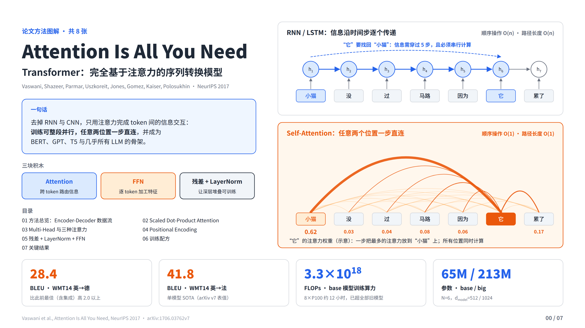
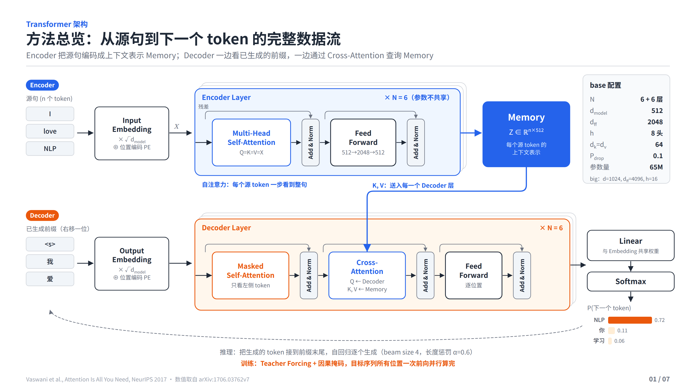
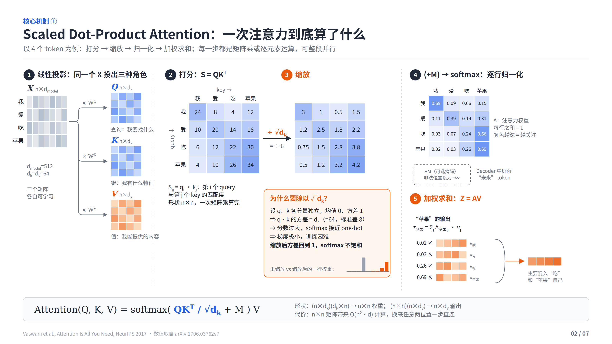
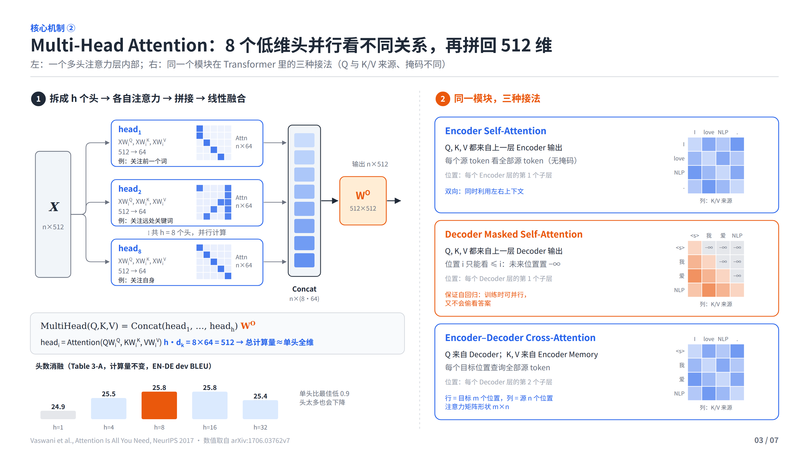
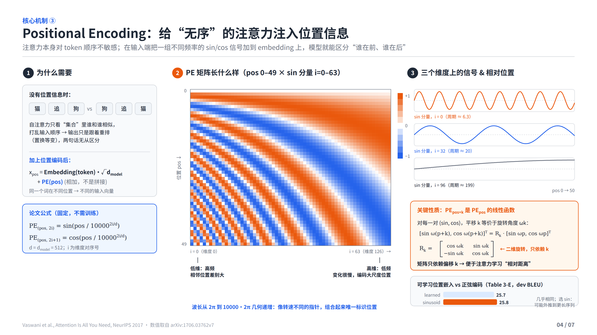
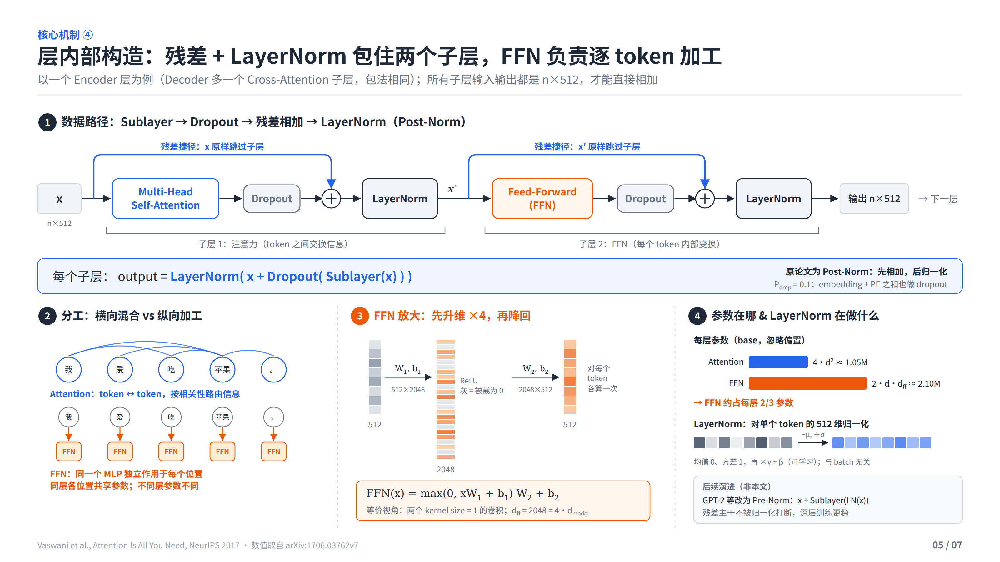
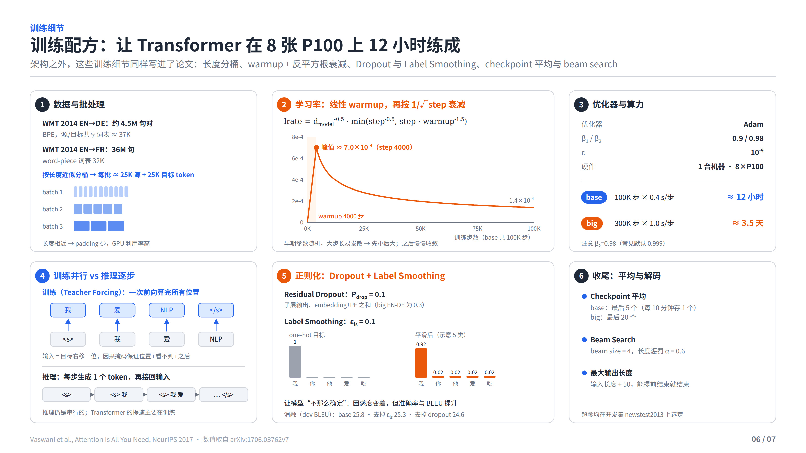
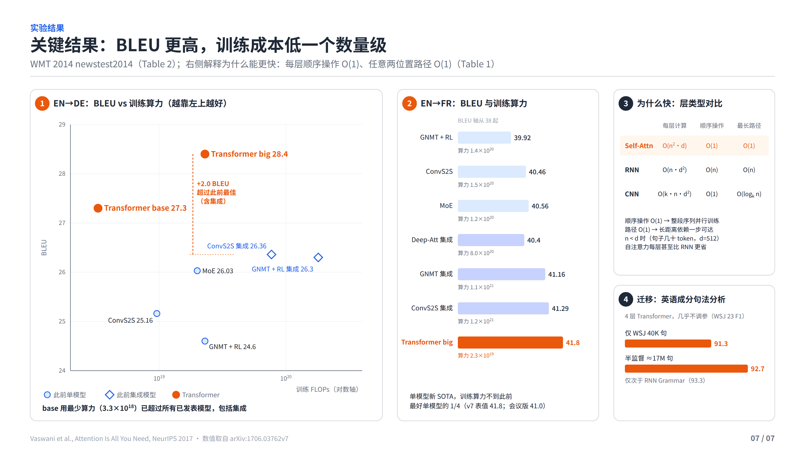

你有没有想过：ChatGPT、Claude、Gemini、DeepSeek，这些长得完全不一样的产品，核心那一层到底是什么？
答案出奇地统一：几乎都来自 2017 年的一篇 15 页论文。标题像一句歌词，叫《Attention Is All You Need》。
更反常识的是，这篇论文根本没打算做“大模型”。它只做了两件事：英语翻德语、英语翻法语，外加一个句法分析小实验。全文没有“预训练”，没有“对话”，也没有“涌现”。
它真正的卖点写在摘要里，朴素到有点不起眼：
“…the Transformer, based solely on attention mechanisms, dispensing with recurrence and convolutions entirely.” ——Transformer 只依赖注意力机制，彻底抛弃了循环和卷积。（Abstract）
翻译成人话：以前的模型是“一个字一个字往后读”，Transformer 改成“整句话一起看”。就这一个改动，让 8 张 P100 显卡训练 12 小时的模型，打败了此前所有翻译系统，包括那些把好几个模型绑在一起的集成系统。
下面我们从“为什么非改不可”讲起，一步一步看它到底改了什么。
2017 年以前，处理句子的主流模型是 RNN（循环神经网络）和它的改良版 LSTM。它的工作方式很像小时候玩的传话游戏：第 1 个人把话传给第 2 个人，第 2 个人加上自己的理解再传给第 3 个……
论文里的说法是：
“…they generate a sequence of hidden states $h_t$, as a function of the previous hidden state $h_{t-1}$ and the input for position $t$. This inherently sequential nature precludes parallelization within training examples…” ——第 t 步的状态依赖第 t−1 步。这种天生的串行性，让一个样本内部无法并行。（Section 1）
传话游戏有两个毛病，正好对应 RNN 的两个瓶颈。
毛病一：慢。第 100 个人必须等前 99 个人都传完才能开口。GPU 有几千个核心，却只能排队等。句子越长，等得越久。
毛病二：失真。传到最后，开头那句话早就走样了。比如“小猫没过马路，因为它累了”，模型读到“它”时，要回头找“小猫”，信息得穿过中间 5 步才能到达。论文把这叫“路径长度”：RNN 是 $O(n)$，句子越长，远处的信息越难传到。
当时也有人用卷积（ConvS2S、ByteNet）来并行，但卷积每次只看一个小窗口，想连起两个远处的词，要堆很多层，路径长度变成 $O(n/k)$ 或 $O(\log_k n)$。注意力机制其实早就有了（Bahdanau 2014），但几乎都是嫁接在 RNN 上的辅助零件，主干还是那条传话链。
所以问题很清楚：能不能把传话链整个拆掉，只留下注意力？
Transformer 的回答是：能。
“…relying entirely on an attention mechanism to draw global dependencies between input and output.” ——完全依靠注意力机制，建立输入和输出之间的全局依赖。（Section 1）
打个比方：RNN 是传话游戏，Transformer 是圆桌会议。所有人同时坐在桌边，谁想知道什么，直接看向那个人问就行。“它”想知道自己指的是谁，一眼看向“小猫”，一步到位。所有人还可以同时提问，GPU 的几千个核心终于都有活干了。
论文 Table 1 用三个数字把这件事说透了：
| 层类型 | 每层计算量 | 顺序操作数 | 最长路径 |
|---|---|---|---|
| Self-Attention | $O(n^2 \cdot d)$ | $O(1)$ | $O(1)$ |
| RNN | $O(n \cdot d^2)$ | $O(n)$ | $O(n)$ |
| CNN | $O(k \cdot n \cdot d^2)$ | $O(1)$ | $O(\log_k n)$ |
“顺序操作 $O(1)$”的意思是：不管句子多长，一层里都不用排队，一把算完。“最长路径 $O(1)$”的意思是：任意两个词之间只隔一步。代价是计算量里有个 $n^2$，因为每个词都要和其他所有词打个招呼。不过论文指出，翻译句子通常只有几十个 token，比表示维度 $d=512$ 小，这时自注意力每层反而比 RNN 更省。

整体结构还是经典的“编码器-解码器”（论文 Figure 1）：Encoder 读懂源句，Decoder 一边看已经写出的译文，一边回头查源句，然后预测下一个词。两边各堆 6 层。真正的新东西在每一层的内部。我们按开会的顺序讲。
开会前，每个词都要准备三张卡片：
· Query（问题卡）：我想找什么样的信息？
· Key（名片）：我能提供什么样的信息？
· Value（内容卡）：如果你选中我，我真正交给你的东西。
这就像在图书馆查资料：Query 是你的检索词，Key 是每本书的书脊标签，Value 是书的内容。你拿检索词去比对所有标签，越匹配的书读得越多，最后把读到的内容按匹配度混在一起。三张卡片都来自同一个词向量 $x$，分别乘上三个可学习的矩阵 $W^Q, W^K, W^V$。
论文的公式只有一行（Equation 1）：
$$\mathrm{Attention}(Q,K,V)=\mathrm{softmax}\!\left(\frac{QK^\top}{\sqrt{d_k}}\right)V$$拆开读：$QK^\top$ 让每个问题卡和所有名片做点积，得到 $n\times n$ 的“匹配分数表”；softmax 把每一行变成加起来等于 1 的权重；再乘 $V$，就是按权重把内容混起来。整句话的所有词在一次矩阵乘法里同时完成，没有任何排队。

这个小细节很多人一眼带过，其实挺关键。论文在脚注里给了解释：
“…assume that the components of q and k are independent random variables with mean 0 and variance 1. Then their dot product … has mean 0 and variance $d_k$.” ——如果 q、k 每个分量都是均值 0、方差 1 的独立随机变量，那么它们的点积方差就是 $d_k$。（Section 3.2.1，脚注 4）
$d_k=64$ 时，点积的标准差是 8。分数动不动就是 ±20，softmax 会变成“一个 1、其余全是 0”，梯度几乎消失，模型学不动。除以 $\sqrt{d_k}$ 后方差回到 1，softmax 重新变得“软”。
说白了，这就像会议室的麦克风音量：人越多（维度越高），每个人的声音叠起来越响，不调小音量，大家只能听见嗓门最大的那个人。
官方代码 tensor2tensor 的写法很直白：先把 q 缩小，再做矩阵乘法、softmax、加权求和：
# tensor2tensor/layers/common_attention.py:4700-4702 (multihead_attention 内)
key_depth_per_head = total_key_depth // num_heads
if not vars_3d:
q *= key_depth_per_head**-0.5 # 先除以 √d_k（等价于对分数缩放）
# tensor2tensor/layers/common_attention.py:1648-1667 (dot_product_attention)
logits = tf.matmul(q, k, transpose_b=True) # [..., length_q, length_kv] 即 QK^T
if bias is not None:
logits += bias # 掩码：非法位置加上一个极大的负数
weights = tf.nn.softmax(logits, name="attention_weights")
...
return tf.matmul(weights, v) # 按权重混合 V先缩 q 再相乘，和论文“先乘后除”在数学上完全等价，只是把除法挪到了更小的张量上。掩码通过 bias 加到 logits 上，正好对应论文“set to −∞”的做法。
只开一场会有个问题：一句话里的关系不止一种。“它”要找指代对象，动词要找宾语，形容词要找它修饰的名词。一组 Q/K/V 只能学一种“看法”，把所有关系平均到一起就糊了。论文在 Section 2 直说了这个代价：注意力的平均会降低有效分辨率，所以要用多头来抵消。
做法是把 512 维切成 8 份，每份 64 维，相当于请 8 位专家各开一场小会：
$$\mathrm{MultiHead}(Q,K,V)=\mathrm{Concat}(\mathrm{head}_1,\dots,\mathrm{head}_h)\,W^O$$ $$\mathrm{head}_i=\mathrm{Attention}(QW_i^Q,\;KW_i^K,\;VW_i^V)$$8 个头的结果拼回 512 维，再用 $W^O$ 融合一下。因为 $h\cdot d_k=8\times64=512$，总计算量和一个 512 维的大头差不多，相当于免费换来了 8 种视角。

多头真的学到了不同的东西吗？论文附录的 Figure 3–5 给了证据：第 5 层有些头专门把动词“making”连到远处的“more difficult”；有两个头专门处理代词“its”的指代，注意力“very sharp”；还有些头明显在学句法结构。论文原话是：“The heads clearly learned to perform different tasks.”
同一个注意力模块，在 Transformer 里有三种接法：
| 接法 | Q 从哪来 | K、V 从哪来 | 能看见谁 |
|---|---|---|---|
| Encoder 自注意力 | 源句 | 源句 | 全部源词（双向） |
| Decoder 掩码自注意力 | 已生成的译文 | 已生成的译文 | 只能看自己和左边 |
| Cross-Attention | 译文 | Encoder 的输出 | 全部源词 |
中间那行的“掩码”就像考试时用纸盖住后面的答案：训练时整句译文一次性喂进去，但每个位置只能看到自己左边，模型没法偷看答案。这样训练可以并行，又不会作弊。
圆桌会议有个隐患：圆桌没有座次。注意力只关心“谁和谁像”，不关心“谁在前谁在后”。“猫追狗”和“狗追猫”在它看来是同一组词。
论文的解法是给每个位置加一组固定的波形信号（Section 3.5）：
$$PE_{(pos,2i)}=\sin\!\left(\frac{pos}{10000^{2i/d_{\text{model}}}}\right),\qquad PE_{(pos,2i+1)}=\cos\!\left(\frac{pos}{10000^{2i/d_{\text{model}}}}\right)$$可以把它想成一组钟表指针：秒针转得飞快（低维，高频），分针慢一些，时针更慢（高维，低频）。只看秒针分不清 1 点和 2 点，但所有指针一起看，每个时刻都是独一无二的。波长从 $2\pi$ 一路增长到 $10000\cdot2\pi$。

为什么选正弦？因为它有一个漂亮的性质：$PE_{pos+k}$ 可以写成 $PE_{pos}$ 的线性变换（一个只依赖 $k$ 的旋转），模型更容易学到“隔了几个词”这种相对距离。论文也试过可学习的位置向量，效果几乎一样（Table 3 第 E 行：25.7 vs 25.8），最后选正弦，是希望能外推到比训练时更长的句子。
# tensor2tensor/layers/common_attention.py:443-453 (get_timing_signal_1d)
position = tf.to_float(tf.range(length) + start_index)
num_timescales = channels // 2
log_timescale_increment = (
math.log(float(max_timescale) / float(min_timescale)) /
tf.maximum(tf.to_float(num_timescales) - 1, 1))
inv_timescales = min_timescale * tf.exp(
tf.to_float(tf.range(num_timescales)) * -log_timescale_increment)
scaled_time = tf.expand_dims(position, 1) * tf.expand_dims(inv_timescales, 0)
# Please note that this slightly differs from the published paper.
signal = tf.concat([tf.sin(scaled_time), tf.cos(scaled_time)], axis=1)max_timescale=1e4 对应论文里的 10000；频率按几何级数排列。差别只在 sin/cos 的排列方式。
开完会，每个人带着从别人那里收集到的信息回到自己的工位，独立消化。这就是每层第二个子层：逐位置前馈网络（FFN，Equation 2）：
$$\mathrm{FFN}(x)=\max(0,\;xW_1+b_1)\,W_2+b_2$$先把 512 维放大到 2048 维，过一个 ReLU，再压回 512 维。每个词各算各的，但用同一套参数。分工很清楚：注意力负责“词与词之间交换信息”，FFN 负责“每个词内部加工信息”。按参数量算，FFN 每层约 2.1M，注意力约 1.05M，FFN 占了每层的大约三分之二。
每个子层外面还包着一层“保险”：
$$\mathrm{output}=\mathrm{LayerNorm}\big(x+\mathrm{Dropout}(\mathrm{Sublayer}(x))\big)$$残差连接 $x+\dots$ 像会议纪要的原稿：不管讨论得多热烈，原始信息都原样保留一份，梯度也能顺着这条捷径直通底层。LayerNorm 则把每个词的 512 个数拉回均值 0、方差 1，防止层数一深数值就飘走。这种“先相加、后归一化”的写法叫 Post-Norm。

transformer_base_v1 默认 layer_postprocess_sequence="dan"（dropout → add → norm），和论文一样是 Post-Norm；但从 transformer_base_v2 开始改成了 layer_preprocess_sequence="n" + "da"，也就是先归一化的 Pre-Norm（models/transformer.py:1846-1847）。哈佛的 Annotated Transformer 也选了 Pre-Norm，代码注释里写着“the norm is first as opposed to last”。后来的 GPT-2 等模型基本都走了 Pre-Norm，因为深层训练更稳。# code/annotated-transformer/the_annotated_transformer.py:344-357
class SublayerConnection(nn.Module):
"""
A residual connection followed by a layer norm.
Note for code simplicity the norm is first as opposed to last.
"""
def __init__(self, size, dropout):
super(SublayerConnection, self).__init__()
self.norm = LayerNorm(size)
self.dropout = nn.Dropout(dropout)
def forward(self, x, sublayer):
"Apply residual connection to any sublayer with the same size."
return x + self.dropout(sublayer(self.norm(x))) # Pre-Norm 写法论文写法应为 self.norm(x + self.dropout(sublayer(x)))；这里的 Pre-Norm 是后来被广泛采用的改法。
| 维度 | RNN + Attention（旧） | Transformer（新） |
|---|---|---|
| 主干 | 循环链，逐步传递 | 自注意力 + FFN，整句并行 |
| 注意力的角色 | 嫁接在主干上的辅助零件 | 主干本身 |
| 远距离依赖 | 路径 $O(n)$，越远越难 | 路径 $O(1)$，一步直连 |
| 训练并行度 | 一个样本内部只能串行 | 一个样本内部全部并行 |
| 位置信息 | 天然蕴含在循环顺序中 | 靠位置编码显式注入 |
| 主要代价 | 慢、长句遗忘 | $O(n^2)$ 显存与计算 |
好架构还要配好的训练方法。最有名的是 warmup 学习率（Equation 3）：
$$lrate=d_{\text{model}}^{-0.5}\cdot\min\!\left(step^{-0.5},\;step\cdot warmup^{-1.5}\right),\quad warmup=4000$$前 4000 步学习率线性上升，之后按 $1/\sqrt{step}$ 慢慢下降，峰值大约 $7\times10^{-4}$。这就像新司机上路：一开始参数是随机的，猛踩油门容易翻车，先慢慢加速，熟悉了再稳稳巡航。

官方代码里这个公式藏在一个叫 noam 的分支里，名字取自作者 Noam Shazeer：
# tensor2tensor/utils/learning_rate.py:105-115 (legacy_learning_rate_schedule)
if hparams.learning_rate_decay_scheme == "noam":
ret = 5000.0 * hparams.hidden_size**-0.5 * tf.minimum(
(step_num + 1) * warmup_steps**-1.5, (step_num + 1)**-0.5)
...
optimizer_correction = 0.002 if "adam" in hparams.optimizer else 1.0
return ret * optimizer_correction * hparams.learning_rate配合 transformer_base_v1 里的 learning_rate=0.1：5000 × 0.002 × 0.1 = 1，恰好还原成论文公式。
另外几条家规：Adam 的 $\beta_2$ 用 0.98（比常见默认 0.999 小）；每个子层输出加 0.1 的 Dropout；标签平滑 $\epsilon_{ls}=0.1$，让模型别对正确答案太笃定。论文直言标签平滑“hurts perplexity… but improves accuracy and BLEU score”，也就是困惑度变差了，但翻译质量提高了。

直接看论文 Table 2（WMT 2014 newstest2014）：
| 模型 | EN→DE BLEU | EN→FR BLEU | 训练算力 (FLOPs, EN→DE / EN→FR) |
|---|---|---|---|
| GNMT + RL | 24.6 | 39.92 | 2.3×1019 / 1.4×1020 |
| ConvS2S | 25.16 | 40.46 | 9.6×1018 / 1.5×1020 |
| MoE | 26.03 | 40.56 | 2.0×1019 / 1.2×1020 |
| ConvS2S 集成 | 26.36 | 41.29 | 7.7×1019 / 1.2×1021 |
| Transformer (base) | 27.3 | 38.1 | 3.3×1018 |
| Transformer (big) | 28.4 | 41.8 | 2.3×1019 |
这张表里最该看的不是 28.4，而是 base 那一行。它的训练算力 3.3×1018 是全表最低，只有 ConvS2S 的约三分之一、GNMT 的约七分之一，但它的英德 BLEU 27.3 已经超过表里所有旧模型，包括集成模型。换句话说，便宜的版本已经比贵的旧冠军强。
big 模型在英德上达到 28.4，比此前最好的成绩（含集成）高出 2 BLEU 以上。在机器翻译里，1 个 BLEU 通常已经是明显进步，2 个以上相当于把整个排行榜往上推了一档。英法上，big 拿到 41.8，算力只有 ConvS2S 集成的大约 1/50。
消融实验（Table 3，开发集 newstest2013）告诉我们哪些设计真的有用：
| 改动 | dev BLEU | 说明了什么 |
|---|---|---|
| base（h=8，dk=64） | 25.8 | 参照 |
| 只用 1 个头（dk=512） | 24.9 | 多头确实有用：单头低 0.9 |
| 32 个头（dk=16） | 25.4 | 头太多、每头太窄也不行 |
| dk 降到 16（行 B） | 25.1 | “匹配”这件事需要足够的维度 |
| 去掉 Dropout | 24.6 | 正则化很关键，否则过拟合 |
| 去掉标签平滑 | 25.3 | 标签平滑贡献约 0.5 |
| 可学习位置向量 | 25.7 | 正弦编码不是关键，有位置信息就行 |
| big（d=1024，h=16） | 26.4 | 更大更好，规模化的伏笔 |
最后一行很值得回味：模型变大，效果就稳定变好。论文只是顺带一提（“bigger models are better”），却恰好预言了后面五年的整条路线。
论文还做了一个跨任务小实验：英语成分句法分析。只用 4 层、几乎没调参，在只有 4 万句训练数据的 WSJ 上拿到 91.3 F1，半监督设置下 92.7，超过了大部分专门设计的模型。这说明它不只是一个“翻译模型”，而是一种通用的序列建模积木。
技术上，它把序列建模拆成了一组标准积木：注意力负责路由，FFN 负责加工，残差和归一化负责让积木能一直往上堆。后来的 BERT 只拿了 Encoder，GPT 只拿了 Decoder，T5 保留了整套 Encoder-Decoder。架构几乎不用改，换个训练目标就行。
产业上，它和 GPU 天生合拍。整个前向计算几乎都是大矩阵乘法，正是 GPU、TPU 最擅长的。RNN 时代，加显卡也快不起来，因为计算本身要排队；Transformer 时代，算力翻倍就能把模型做大一倍。从 6500 万参数的 base 到今天上万亿参数的模型，靠的都是这条“可以花钱买效果”的路。
方法学上，它说明“少一点先验，多一点数据和算力”可以赢。RNN 内置了“按顺序读”的假设，CNN 内置了“局部相关”的假设；Transformer 几乎什么都不假设，只给一个位置信号，剩下的关系全靠模型自己从数据里学。数据和算力够多时，这种“白纸”反而走得最远。
作者自己承认的：一是注意力的加权平均会降低“有效分辨率”，多头只是缓解；二是长序列的计算问题。结论部分写着，计划研究“local, restricted attention mechanisms to efficiently handle large inputs and outputs such as images, audio and video”，还说“Making generation less sequential is another research goal”。也就是说，生成仍然是串行的，Transformer 提速的主要是训练，推理还是一个字一个字往外蹦。
我的判断：第一，$O(n^2)$ 的显存和计算是实打实的天花板。句子短时不明显，上下文到了 10 万 token 就是灾难。后来的 FlashAttention、稀疏注意力、线性注意力、Mamba，都在补这个洞。第二，Post-Norm 加 warmup 的组合对深层模型不太友好，层数一多就容易训崩，这也是后来大家普遍改用 Pre-Norm 的原因。第三，论文说正弦编码“may allow the model to extrapolate”，但并没有给出外推实验；后来的实践表明，绝对位置编码的外推能力很有限，RoPE、ALiBi 等相对位置方案才逐渐成为主流。第四，评测面比较窄：两个语言对、一个句法任务，主要指标只有 BLEU。它的通用性，是后来的 BERT 和 GPT 替它证明的。
回到最开始的问题：为什么一篇只做翻译的论文，会成为所有大模型的发动机？
因为它解决的从来不只是“翻译”，而是一个更底层的问题：让一句话里的每个词，都能一步找到它需要的信息，而且所有词同时找。传话游戏变成圆桌会议之后，GPU 终于能满负荷运转，模型终于能放心地变大。剩下的故事，你在 ChatGPT 的对话框里每天都能看到。
1. 注意力即路由：$\mathrm{softmax}(QK^\top/\sqrt{d_k})V$ 让任意两个位置一步交换信息，多头提供多种视角，掩码决定谁能看见谁。
2. 积木化堆叠：Attention（词与词之间）+ FFN（词内部）+ 残差/LayerNorm（可训练性），位置信息靠 PE 注入。
3. 并行即规模：去掉循环后，每层只需 $O(1)$ 次顺序操作，用更少的算力拿到更高的 BLEU，这才有了后来的“越大越强”。